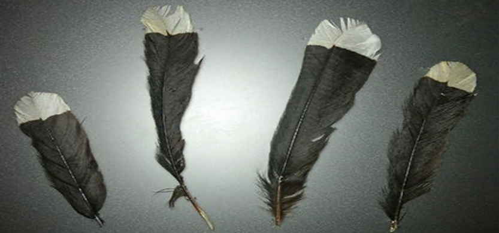
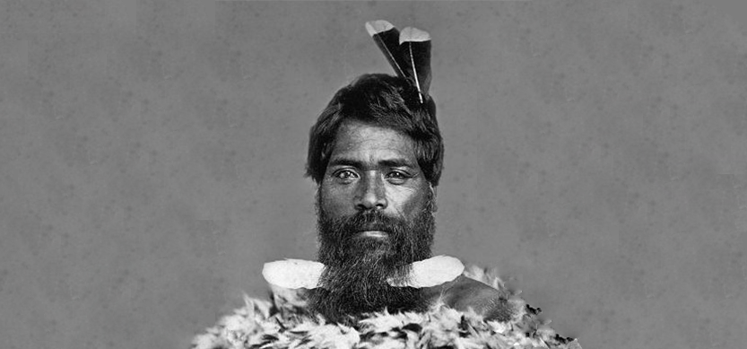
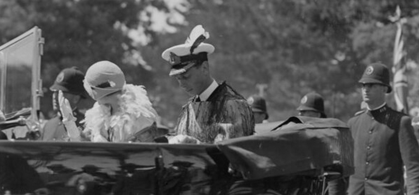
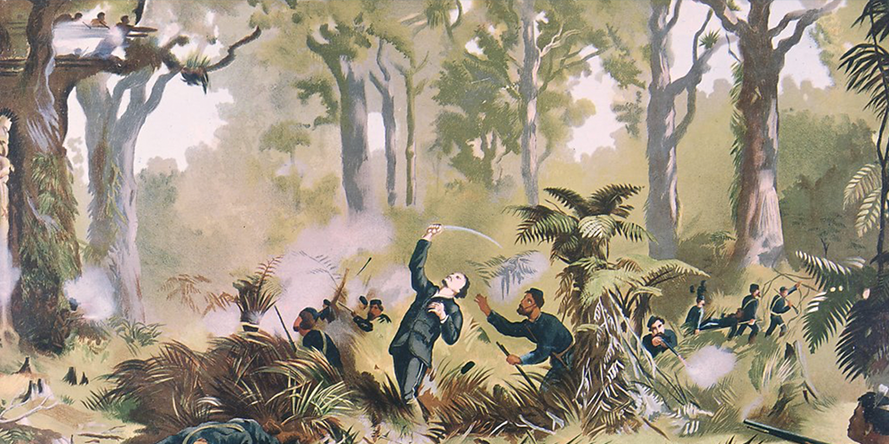

huia
(전멸)
후이아(huia)는 참새목 와틀과에 속하는 새로, 뉴질랜드에 서식했다.
부리가 시작되는 부위에 분홍색 살점이 있고, 종아리 마디가 길어서 매우 아름다웠다고 한다. 독특한 깃털과 부드러운 노랫소리로 뉴질랜드 원주민인 마오리족의 특별한 사랑을 받았다. 그 예시로는, 신성한 의식을 치를 때는 부족 우두머리만이 후이아 꽁지깃과 부리를 이용한 장식을 할 수 있었다는 점에서 찾아볼 수 있다.
Why did Huia go extinct?
  ‘세상에서 가장 비싼 깃털’의 주인공이기 때문이다.
후이아 멸종에 결정적 원인을 제공하는 사건은 1902년 당시 영국 왕세자였던 요크 공(조지 5세)이 뉴질랜드를 방문하자, 마오리족이 환영의 뜻으로 왕제사 모자에 후이아 깃털을 꽂아준 일에서 시작되었다.
이러한 일로 유럽 전역에서 후이아 깃털을 모자에 꽂는 것이 엄청난 유행이 되었다. 이 유행에 모두 동참하기 위해 후이아는 무차별적으로 포획되어 돈과 권력을 가진 남자들의 장신구가 되어버리고 말았다.
Can't see Huia anymore?
|  | 이러한 남획으로부터 5년 뒤인 1907년 12월 28일, 한 생물학자에게 발견된 최후의 세 마리를 끝으로 ‘후이아’는 지구상에서 자취를 감추었다. 불과 5년 만에 멸종한 후이아는 멸종한 것이다. 우리는 이 이야기를 교훈 삼아 인간의 탐욕이 부른 잔인한 역사가 되풀이 되지 않게 해야한다. |
|---|